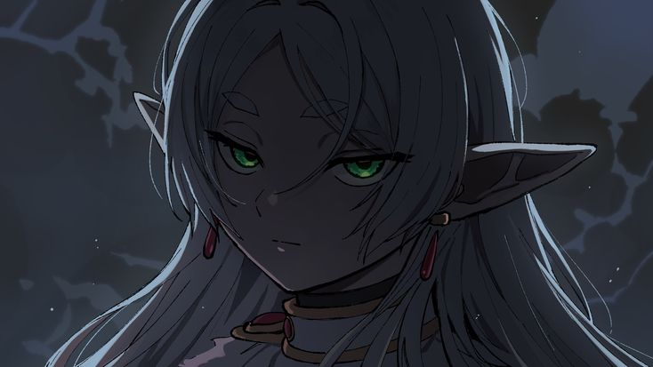
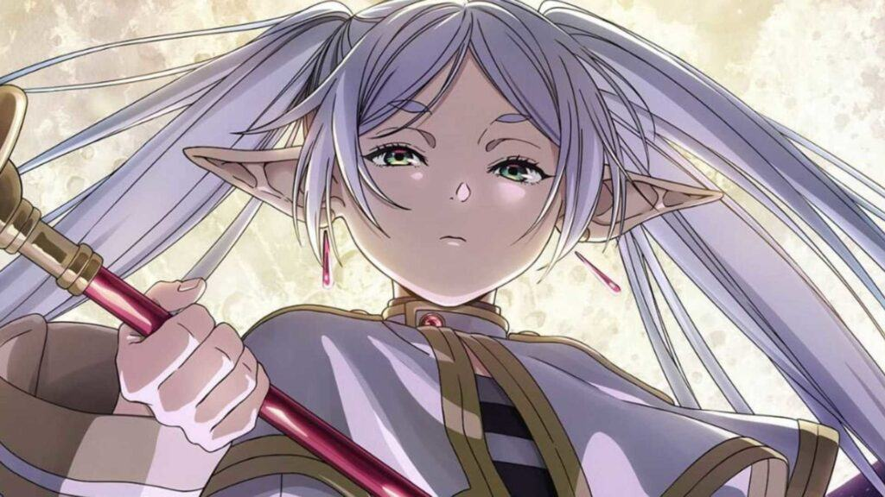
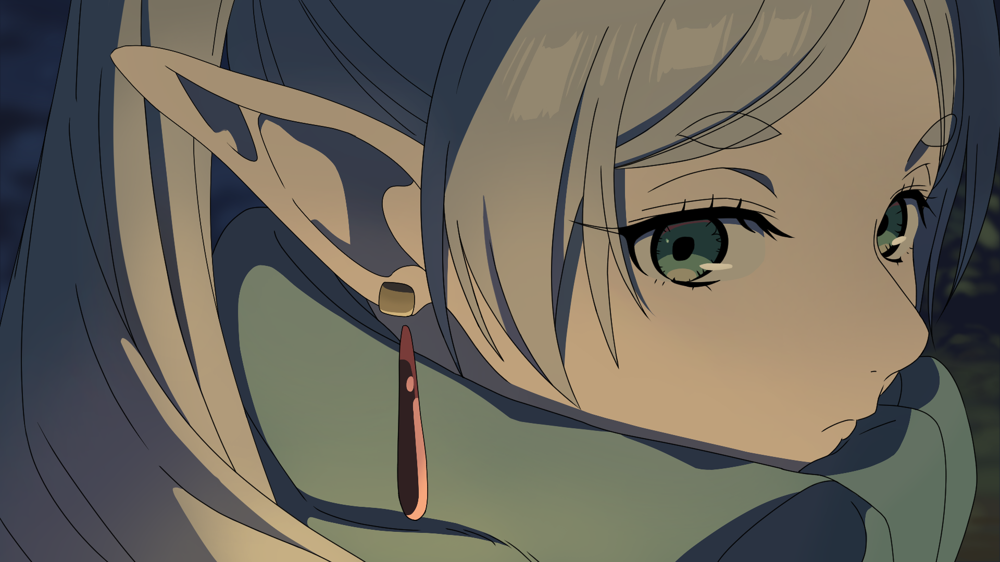
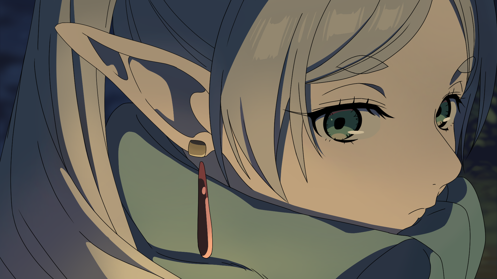
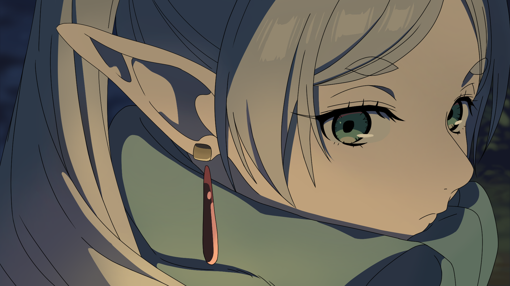

Frieren


 


An elven mage who lived for over a thousand years. Calm, distant, and contemplative, she begins to understand the value of time and human emotion long after her hero party's journey ends. Her story is one of self-discovery and learning to cherish fleeting moments.